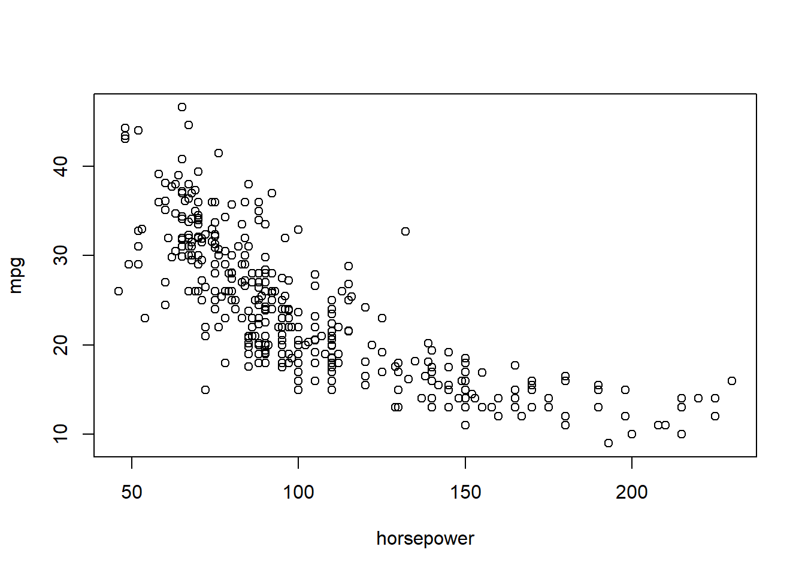
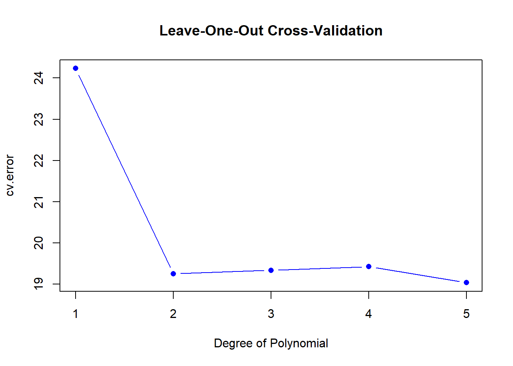
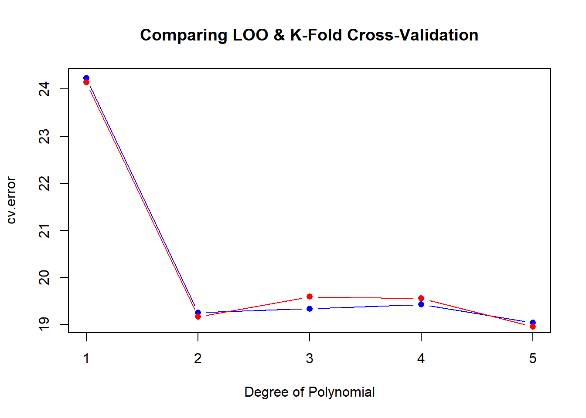
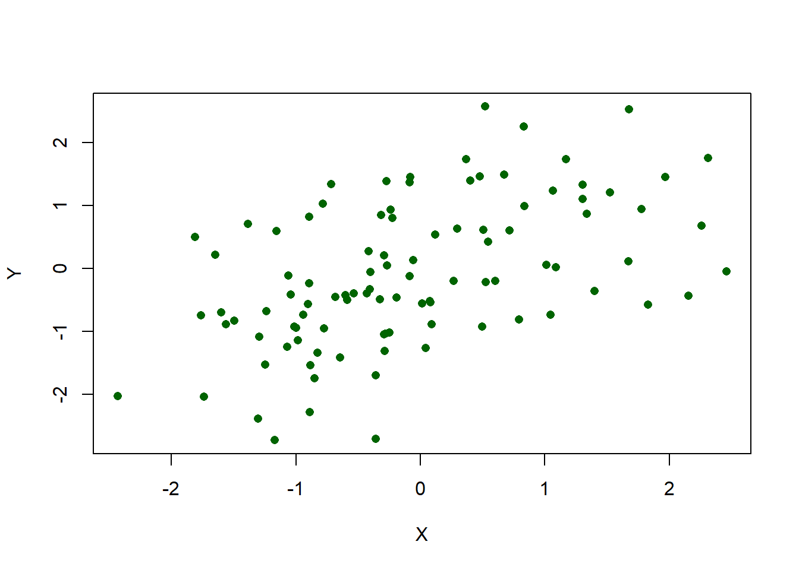
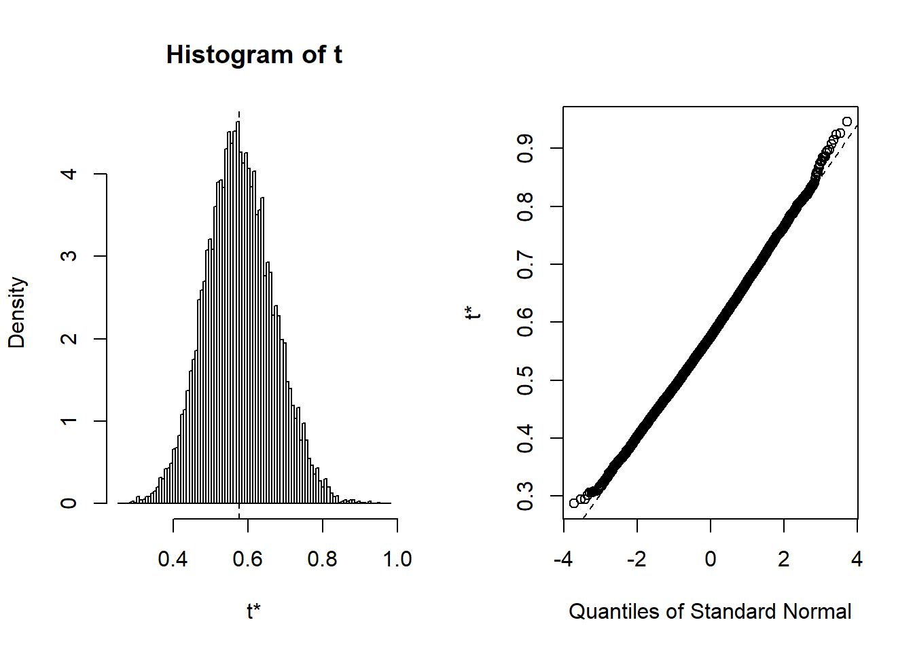

We are going to use the Auto data from the ISLR package to illustrate various resampling methods.
library(ISLR)
data(Auto)?Autodim(Auto)## [1] 392 9names(Auto)## [1] "mpg" "cylinders" "displacement" "horsepower"
## [5] "weight" "acceleration" "year" "origin"
## [9] "name"A plot is always a nice place to start with a new data set.
plot(mpg ~ horsepower, data = Auto)
First, lets run a glm model on the Auto data set.
glm_auto <- glm(mpg ~ horsepower, data = Auto)Next, load the boot package and check out the documentation for the Cross-validation for Generalized Linear Models cv.glm function.
library(boot)Then, execute the cv.glm function using the Auto data set and the glm_auto model above. return the delta parameter. Notice that we do not define the K argument in the cv.glm function, which number of groups into which the data should be split to estimate the cross-validation prediction error. The default for K is to set it equal to the number of observations in the data, which gives the Leave-One-Out Cross-Validation.
glm_auto_lcoov <- cv.glm(Auto, glm_auto)
glm_auto_lcoov$delta## [1] 24.23151 24.23114You may notice, your R session hangs for a bit as the function runs. This is because cv.glm uses brute force to repeatedly fit the model on n observation, removing 1 observation each time. Because this is a linear model, we can dramatically speed up the computation with the formula displayed in section 5.2 of ISLR (pg. 180), which uses the results of the computation stored in the glm_auto model object. Basically, we take the mean of the squared residuals of glm_auto and divide them by the squared vector containing the diagonal of the hat matrix.
loocv <- function(x){
hat <- lm.influence(x)$hat
mean((residuals(x)/(1-hat))^2)
}Is the new function faster? We can use the microbenchmark package to time each function in milliseconds, and we see that the new loocv function is much faster.
library(microbenchmark)
microbenchmark(cv.glm(Auto, glm_auto)$delta, loocv(glm_auto), times = 10, unit = "ms")## Unit: milliseconds
## expr min lq mean
## cv.glm(Auto, glm_auto)$delta 1188.119815 1205.69117 1229.761462
## loocv(glm_auto) 0.817638 0.88777 1.511502
## median uq max neval cld
## 1233.4534250 1253.614031 1258.758996 10 b
## 0.9377185 0.976377 6.007078 10 aNext, lets use a for loop with our loocv function to efficiently create 5 new polynomial versions of the previous model, regressing horsepower against mpg and see if the results improve as polynomial order increases.
cv.error <- rep(0, 5)
degree <- 1:5
for(d in degree){
glm_fit <- glm(mpg ~ poly(horsepower, d), data = Auto)
cv.error[d] <- loocv(glm_fit)
}
plot(degree, cv.error, type = "b", col = "blue", pch = 16,
main = "Leave-One-Out Cross-Validation", xlab = "Degree of Polynomial")
This time, we can use the same model, but return to the cv.glm function so that we can define K as equal to 10. First, initialize the cv.error10 and degree vectors, run the for loop. Typically, K-fold outperforms LOOCV, but in this example, they are very similar as displayed in plot of the results. As in the previous graph, blue reflects the LOOCV errors, while red reflects K-Fold = 10.
cv.error10 <- rep(0, 5)
degree <- 1:5
for(d in degree){
glm_fit <- glm(mpg ~ poly(horsepower, d), data = Auto)
cv.error10[d] <- cv.glm(Auto, glm_fit, K = 10)$delta[1]
}
plot(degree, cv.error, type = "b", col = "blue", pch = 16,
main = "Comparing LOO & K-Fold Cross-Validation", xlab = "Degree of Polynomial")
lines(degree, cv.error10, type = "b", col = "red", pch = 16)
Suppose that we wish to invest a fixed. sum of money in two financial assets that yield returns of X and Y, where X and Y are random quantities. We will invest a fraction of our money in X, and will invest the remaining \(1 - \alpha\) in Y. We wish to choose \(\alpha\) to minimize the total risk, or variance, of our investment. In other words, we want to minimize \(Var(\alpha X + (1-\alpha)Y)\). One can show that the value that minimizes the risk is given by
\[\alpha = \frac{\sigma^2_Y - \sigma_{XY}}{\sigma^2_X + \sigma^2_Y - 2\sigma_{XY}}\]
where \(\sigma^2_X = Var(X)\), \(\sigma^2_Y = Var(Y)\), and \(\sigma_{XY} = Cov(X,Y)\).
However, the values of \(\sigma^2_X\), \(\sigma^2_Y\), and \(\sigma_{XY}\) are unknown. We can compute estimates for these quantities, \(\hat\sigma^2_X\), \(\hat\sigma^2_Y\), and \(\hat\sigma_{XY}\), using a data set that contains measurements for \(X\) and \(Y\).
We can then estimate the value of \(\alpha\) that minimizes the variance of our investment using:
\[\hat\alpha = \frac{\hat\sigma^2_Y - \hat\sigma_{XY}}{\hat\sigma^2_X + \hat\sigma^2_Y - 2\hat\sigma_{XY}}\]
Load the Portfolio data set from the ISLR package, containing 100 returns for two assets, X and Y.
data("Portfolio")plot(Y ~ X, data = Portfolio, col = "darkgreen", type = "p", pch = 16)
Create the \(\alpha\) function defined above and compute alpha.
alpha <- function(x, y) {
var_x <- var(x)
var_y <- var(y)
cov_xy <- cov(x, y)
(var_y - cov_xy)/(var_x + var_y - 2 *cov_xy)
}
alpha(Portfolio$X, Portfolio$Y)## [1] 0.5758321Great! But what is the standard error of \(\alpha\)? What is it’s variability? This is a case for bootstrap resampling and we can use the boot function to help us.
library(boot)
args(boot)## function (data, statistic, R, sim = "ordinary", stype = c("i",
## "f", "w"), strata = rep(1, n), L = NULL, m = 0, weights = NULL,
## ran.gen = function(d, p) d, mle = NULL, simple = FALSE, ...,
## parallel = c("no", "multicore", "snow"), ncpus = getOption("boot.ncpus",
## 1L), cl = NULL)
## NULLNotice in the boot function, the second argument statistic is where we will place the alpha function. When consulting the documentation in ?boot we find that statistic takes at least two arguments. The first, being the original data and the second needs to be a vector of indices defining the bootstrap sample. The boot package will generate the bootstrap sample from the original data and whatever function defines the statistic argument must be able to use it. For our example, we can make a wrapper function preparing the alpha function for bootstrap.
alpha_boot <- function(data, index){
args <- list(x = data[index, ]$X,
y = data[index, ]$Y)
do.call("alpha", args)
}
alpha_boot(Portfolio, 1:100)## [1] 0.5758321The alpha_boot function returns the same value as the alpha function, so we know it works. Next, lets pass a random sample to the index argument. We expect to get different results from running the alpha function on the original data.
set.seed(1)
alpha_boot(data = Portfolio, index = sample(1:100, 100, replace = TRUE))## [1] 0.5963833The bootstrap does the above calculation, but it does it as many times as we like, depending on what we define for R. Printing the results gives us an estimate of the standard error of the original \(\alpha\) function.
boot.out <- boot(Portfolio, alpha_boot, R = 10000)
boot.out##
## ORDINARY NONPARAMETRIC BOOTSTRAP
##
##
## Call:
## boot(data = Portfolio, statistic = alpha_boot, R = 10000)
##
##
## Bootstrap Statistics :
## original bias std. error
## t1* 0.5758321 0.00180545 0.09079434plot(boot.out)